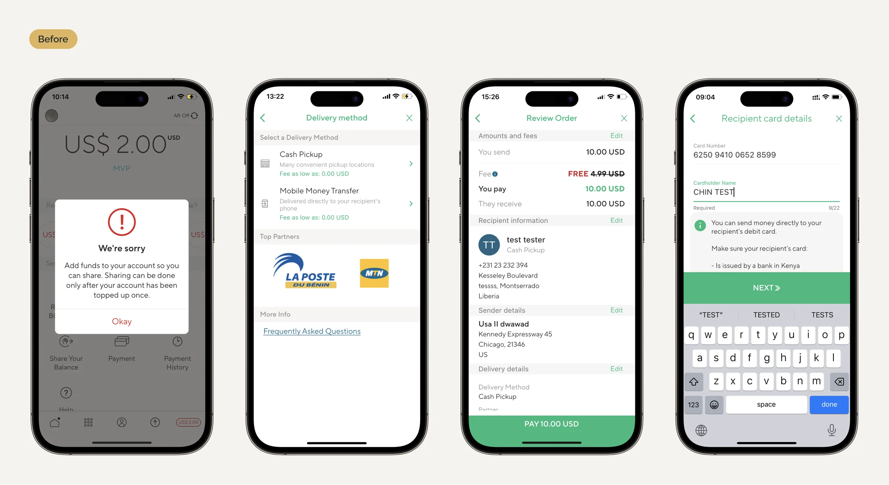
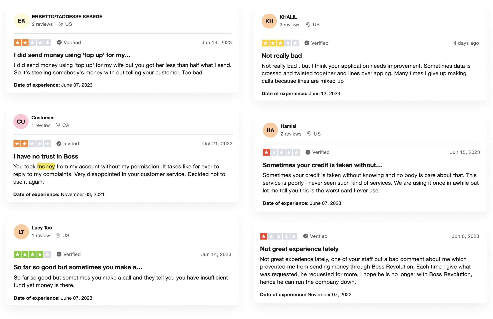
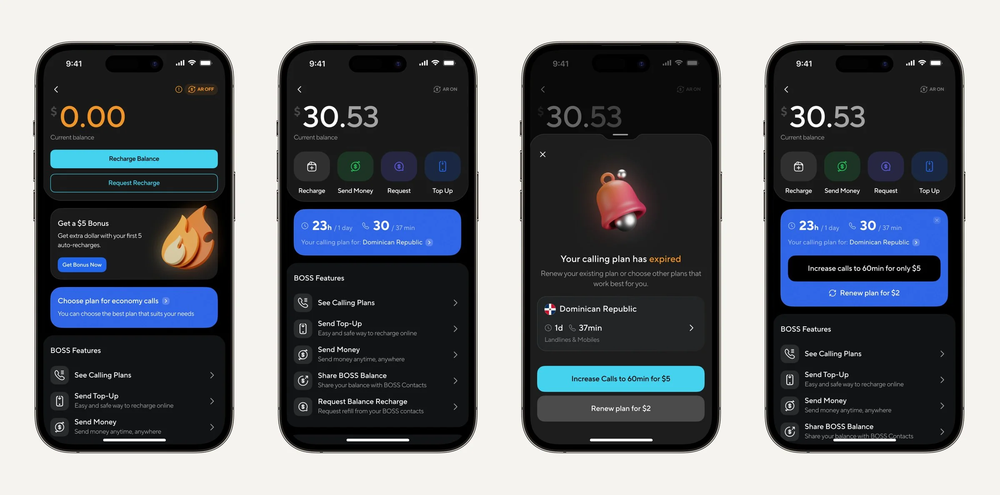
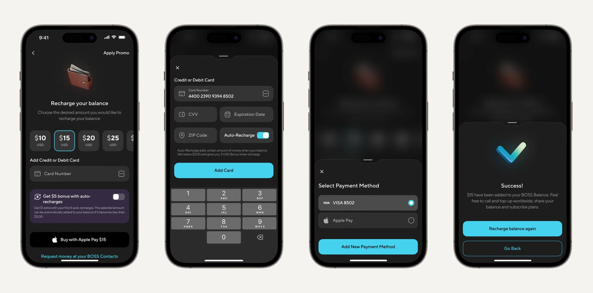
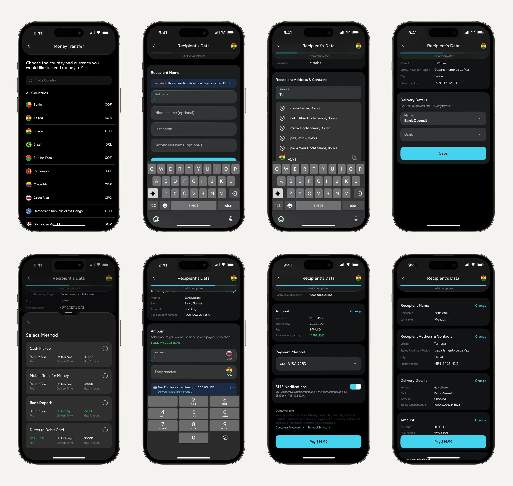

Boss Revolution is a mobile app for iOS and Android that lets users make low-cost international calls, chat, and top up mobile accounts. Beyond communication, it offers financial services like global money transfers, voucher exchanges, and access to news, entertainment, and radio through its built-in digest.
Help speed up the redesign process by improving the user experience, using existing style, and maintaining consistency.


I took on the section with balances, their recharge, and money transfers. Therefore, it was important for me to understand the problems that users face here. The design lead gave me an overall picture, and I additionally studied user reviews on different services, which helped me understand their pain points.
I focused on designing a balance function for the Boss Revolution that would allow users to track their call credit in real-time. The numbers were highlighted in orange to indicate a low balance. The auto-recharge feature was moved to the icon in the top right corner with information on whether it was enabled or not, as users previously complained about it being hidden. Additionally, I added a banner about the connected calling plan so that the user could understand how much time they had left for calls, while preserving the original text size.

The user has the option to select a specific amount to top up their balance or enter it manually. Additionally, the feature of auto-recharge and the ability to request money from a contact has been added.

In the old application, there were six steps with additional transitions inside, and it was unclear how many stages the user had to go through to transfer money. After identifying all dependencies, I restructured the flow, reducing it to four steps and adding a progress bar at the top. Upon completing the information and clicking the save button, the information would collapse and remain on the screen, allowing the user to edit it at any time while forming the final receipt. This flow was reused in other IDT apps.
